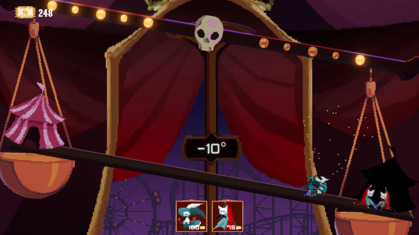

Equilibria is a 2D Windows and Web game that was submitted for the 2024 GMTK Game Jam which placed
94th out of more than 7500 entries.
With a theme of "Built to Scale", it was created with a team of 12 artists, sound designers and programmers. I was a Gameplay and UI programmer.
Our initial idea was a puzzle game involving scaling the player's size. In the end, we felt this idea might be too generic and decided to go the LITERAL route.
'Scale' becomes a literal SCALE.
'Scale' can also means size, size means WEIGHT.
With this in mind, we came up with a unique tower defence game involving a LITERAL scale!

I worked on the core wave spawning of the game, in which the other programmers used
to create the levels of the game. I also helped to review and debug the other programmers' code.
I designed asset modifications that would make the visuals pop brighter like glowing text.
As the main programmers were busy with their gameplay tasks and creating the levels, I took the
opportunity to communicate with the art side and get their opinions on the state of the game.
This helped take off the load of communication from the team leader as I was in charge of sending the message
of the artists to the programmers who were too busy working and needed concise information.